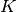

1.5. 随机梯度下降法(SGD)¶
随机梯度下降 (SGD) 是一个简单但非常高效的方法，用于在凸损失函数 (比如线性 SVMs 和 Logistic Regression )下的线性分类器的判别学习。 尽管SGD已经出现在机器学习算法中很长时间了，但是由于其在大规模学习中的出色表现直到 最近才获得了相当大的关注。
SGD已经被成功应用于大规模的和稀疏的机器学习任务中，比如文本分类以及自然语言处理等领域。 由于数据的稀疏性，在此模块中的分类器们能够轻松应对超过10^5的训练样本和超过10^5的特征个数。
随机梯度下降SGD的优点:
- 高效率.
- 实现简单(lots of opportunities for code tuning).
随机梯度下降SGD的缺点:
- SGD需要一些超参数比如正则化参数以及迭代次数。
- SGD对特征规模的变化比较敏感.
1.5.1. 分类¶
警告
务必要在拟合模型前将你的训练数据随机重排列；或者使用
shuffle=True
在每次迭代完毕后都重新洗牌.
SGDClassifier
类实现了一个用于分类的简单的随机梯度下降学习过程并且支持不同类型的损失函数和正则化罚函数。

像其他分类器一样，SGD也必须用两个输入数组进行拟合：数组 X of size [n_samples, n_features] 存储训练样本, 数组 Y of size [n_samples] 存储目标变量(每个训练样本的类标签):
>>> from sklearn.linear_model import SGDClassifier
>>> X = [[0., 0.], [1., 1.]]
>>> y = [0, 1]
>>> clf = SGDClassifier(loss="hinge", penalty="l2")
>>> clf.fit(X, y)
SGDClassifier(alpha=0.0001, average=False, class_weight=None, epsilon=0.1,
eta0=0.0, fit_intercept=True, l1_ratio=0.15,
learning_rate='optimal', loss='hinge', n_iter=5, n_jobs=1,
penalty='l2', power_t=0.5, random_state=None, shuffle=True,
verbose=0, warm_start=False)
当模型拟合好以后，就可以用于预测新样本的类别标签:
>>> clf.predict([[2., 2.]])
array([1])
SGD拟合一个线性模型来训练数据。其成员变量
coef_ 包含了拟合得到的模型参数。
>>> clf.coef_
array([[ 9.9..., 9.9...]])
成员变量 intercept_ 包含了截距 (也可以叫 偏移或偏置):
>>> clf.intercept_
array([-9.9...])
模型是否要使用截距或者说是一个带偏置的超平面，是由
fit_intercept
参数控制的。
为了获得到超平面的标记距离，可以使用
SGDClassifier.decision_function:
>>> clf.decision_function([[2., 2.]])
array([ 29.6...])
具体的损失函数可以通过参数loss
来控制。SGDClassifier
支持以下损失函数:
loss="hinge": (soft-margin) linear Support Vector Machine,loss="modified_huber": smoothed hinge loss,loss="log": logistic regression,- and all regression losses below.
前两个损失函数是比较懒的，它们仅仅在有样本违反了边界约束的时候才会更新模型参数。这个懒汉特性 使得训练过程非常高效并且会产生一个稀疏模型，即使我们使用的是L2罚函数。
使用 loss="log" 或
loss="modified_huber"
使得
predict_proba方法变得可用,
该方法给出一个概率向量的估计
对每一个样本  :
:
>>> clf = SGDClassifier(loss="log").fit(X, y)
>>> clf.predict_proba([[1., 1.]])
array([[ 0.00..., 0.99...]])
具体的罚函数可以通过参数
penalty 来设置。
SGD支持以下的惩罚项:
penalty="l2": L2 norm penalty oncoef_.penalty="l1": L1 norm penalty oncoef_.penalty="elasticnet": Convex combination of L2 and L1;(1 - l1_ratio) * L2 + l1_ratio * L1.
惩罚因子的默认值是penalty="l2".
L1惩罚因子将会导致一个稀疏解，使得很多的系数都变成0。弹性网(Elastic Net)可以解决一些
L1惩罚因子在高度相关的属性的表示方面的缺点。
参数l1_ratio
用来控制L1 penalty和L2 penalty的凸组合。
SGDClassifier
支持多类别分类任务，通过组合多个二类分类器在一对全部(“one versus all” )(OVA)的框架下。
对
个类中的每一个类，一个二类分类器被训练用于区分该类和剩余的其他所有
 类。
在测试阶段，我们对每个分类器计算置信度得分(也就是到超平面的标记距离)并且选择具有最高置信度得分的类
作为被测试样本的类别标签。下图展示了 在鸢尾花数据集上使用 OVA 方法得到的结果。
The dashed lines 代表三个OVA分类器; 背景色显示了被三个分类器划定的决策平面。
类。
在测试阶段，我们对每个分类器计算置信度得分(也就是到超平面的标记距离)并且选择具有最高置信度得分的类
作为被测试样本的类别标签。下图展示了 在鸢尾花数据集上使用 OVA 方法得到的结果。
The dashed lines 代表三个OVA分类器; 背景色显示了被三个分类器划定的决策平面。

In the case of multi-class classification coef_ is a two-dimensionally
array of shape=[n_classes, n_features] and intercept_ is a one
dimensional array of shape=[n_classes]. The i-th row of coef_ holds
the weight vector of the OVA classifier for the i-th class; classes are
indexed in ascending order (see attribute classes_).
Note that, in principle, since they allow to create a probability model,
loss="log" and loss="modified_huber" are more suitable for
one-vs-all classification.
SGDClassifier supports both weighted classes and weighted
instances via the fit parameters class_weight and sample_weight. See
the examples below and the doc string of SGDClassifier.fit for
further information.
Examples:
SGDClassifier supports averaged SGD (ASGD). Averaging can be enabled
by setting `average=True`. ASGD works by averaging the coefficients
of the plain SGD over each iteration over a sample. When using ASGD
the learning rate can be larger and even constant leading on some
datasets to a speed up in training time.
For classification with a logistic loss, another variant of SGD with an
averaging strategy is available with Stochastic Average Gradient (SAG)
algorithm, available as a solver in LogisticRegression.